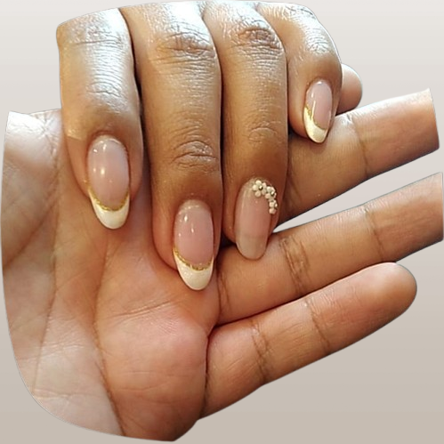
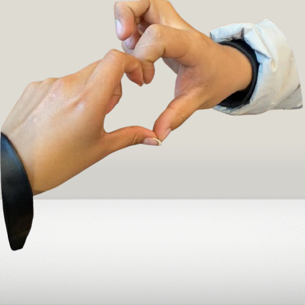
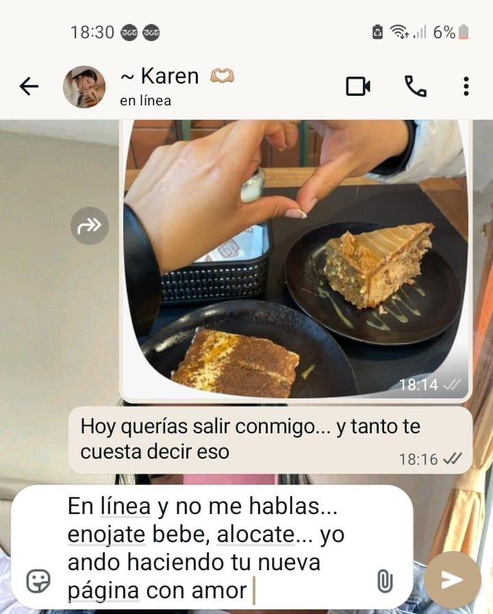

Para
"A veces una historia comienza
con un simple 'Hermosa'"
13 de junio de 2026 — 01:02
Conocerte ha sido uno de los regalos más bonitos de este año.
No sé exactamente qué capítulos escribirán nuestras vidas después. Lo que sí sé es que me alegra profundamente haber comenzado esta historia contigo.
Ojalá podamos seguir construyéndola, paso a paso, con calma, respeto y la misma ilusión con la que empezó aquel primer mensaje.
Me ilusiona seguir conociéndote, desde la calma de quien disfruta cada paso: más conversaciones, más risas, más de esos momentos sencillos que se vuelven inolvidables.
Desde aquel día...
El primer instante capturado

"Los recuerdos más bonitos no siempre duran mucho, pero pueden quedarse para siempre en la memoria."
Hay momentos que uno vuelve a recordar sin darse cuenta

Conocerte ha sido uno de los regalos más bonitos de este año.
No sé exactamente qué capítulos escribirán nuestras vidas después. Lo que sí sé es que me alegra profundamente haber comenzado esta historia contigo.
Ojalá podamos seguir construyéndola, paso a paso, con calma, respeto y la misma ilusión con la que empezó aquel primer mensaje.
Porque las mejores construcciones, como las mejores relaciones, necesitan buenos cimientos, tiempo y el deseo de ambos de seguir levantándolas.
Gracias por formar parte de esta historia. Y gracias por inspirarme a crear este pequeño lugar para ti.